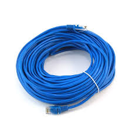
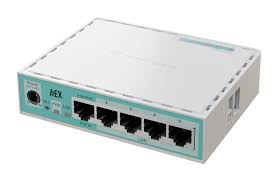
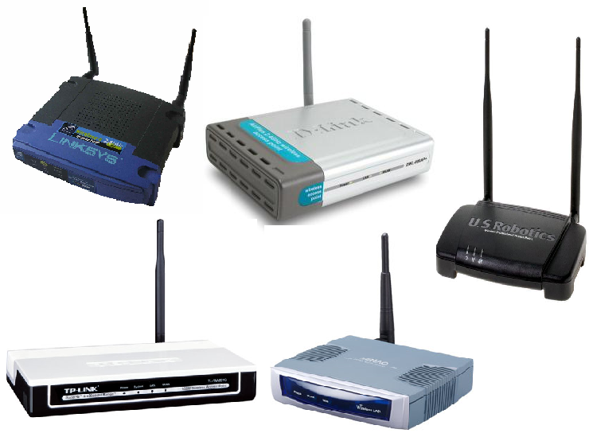

Azarrel Aprillian Nugraha
Teknisi Jaringan | Web Developer | Content Creator
Tentang Saya
Saya adalah siswa jurusan TKJ yang antusias dalam dunia jaringan komputer, instalasi perangkat, dan pembuatan website. Saya telah mengerjakan berbagai proyek jaringan, konfigurasi LAN, dan pembuatan website sederhana.
Proyek TKJ

Instalasi LAN Sekolah
Instalasi kabel UTP dan konfigurasi switch di lab komputer.

Setting Mikrotik
Konfigurasi router Mikrotik untuk RT/RW Net dan hotspot.

Pemasangan Access Point
Project pemasangan WiFi indoor & outdoor dengan AP.